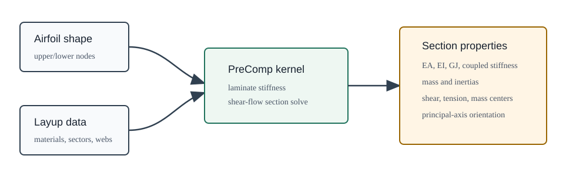

OWENSPreComp.jl
OWENSPreComp computes composite blade section properties for OWENS and for standalone blade-structural studies. It is a Julia translation and automatic-differentiation-aware extension of NREL PreComp.

The package accepts airfoil geometry, spanwise chord and twist, material properties, laminate sectors, and optional webs. It returns stiffness, inertia, and reference-center quantities that are consumed by beam and aeroelastic models.
Primary Interfaces
| Interface | Use |
|---|---|
properties(input::OWENSPreComp.Input) | Preferred Julia interface for one blade section. |
properties(chord, tw_aero_d, ...) | Low-level direct interface used by the Input wrapper. |
tw_rate(naf, sloc, tw_aero_d) | Computes twist-rate inputs from spanwise station data. |
readmain, readmaterials, readprecompprofile, readcompositesection | File-based compatibility readers used by legacy PreComp-style inputs and tests. |
Input and Output are defined in the source but are not currently exported, so call them as OWENSPreComp.Input and OWENSPreComp.Output.
Documentation Map
- Quickstart shows the local development setup and the tested file-to-
Inputworkflow. - Inputs and Outputs lists the Julia data contract and returned section properties.
- Theory, Frames, and Units describes the PreComp assumptions, coordinate frames, and units.
- Validation and Testing records the current pinned checks and remaining hardening work.
- Guide preserves the detailed original PreComp manual material.
- API Reference provides generated docstrings for current functions and types.